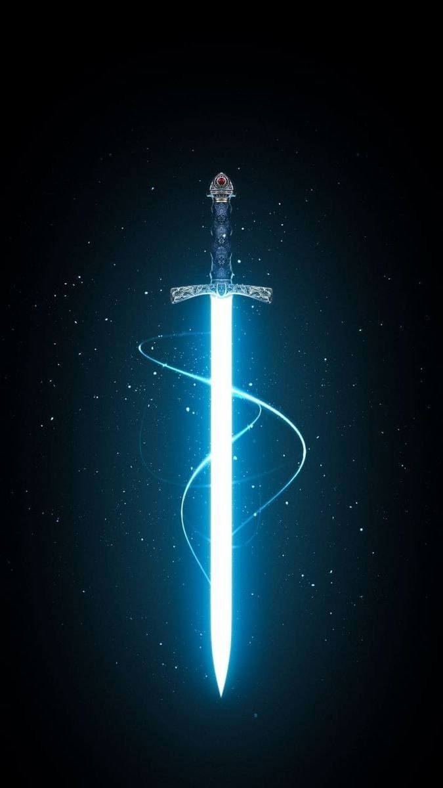
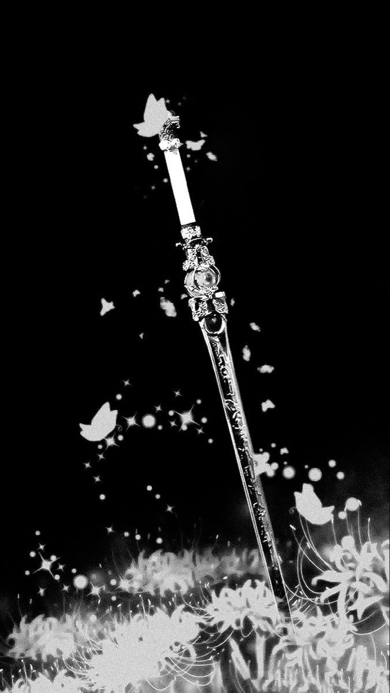
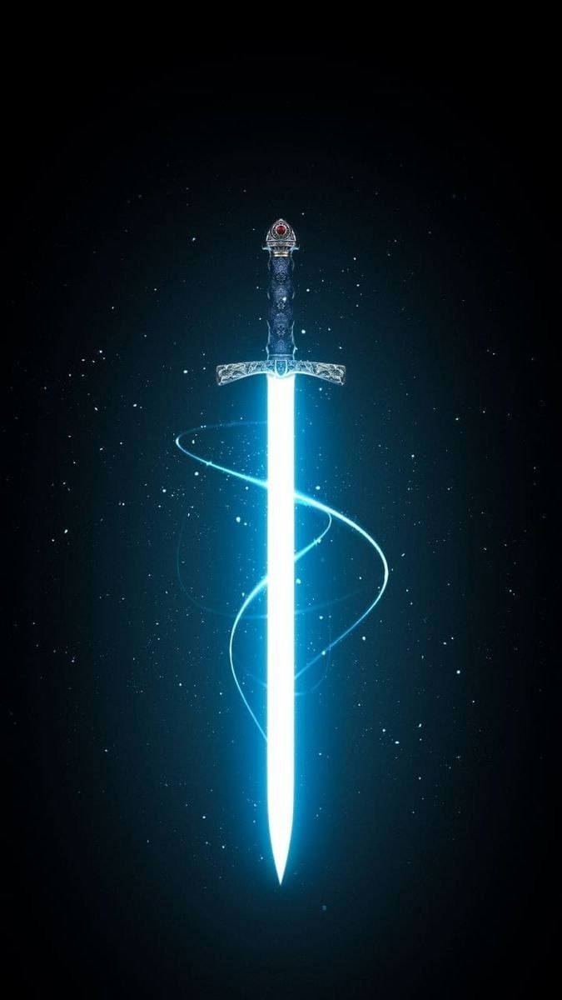
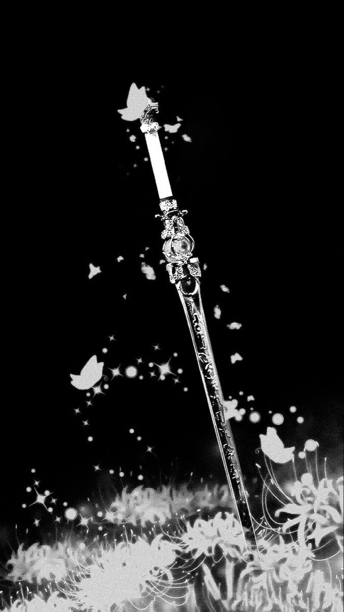

О игре
В этой игре вы уворачиваетесь от кинжалов, летящих сверху. Цель: набить 5000 очков, после чего игра заканчивается. Если вы попали под кинжал, то игру можно перезапустить. Управление идет только влево и вправо.
 


